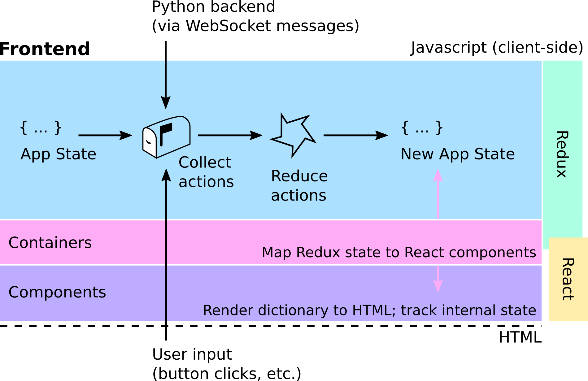
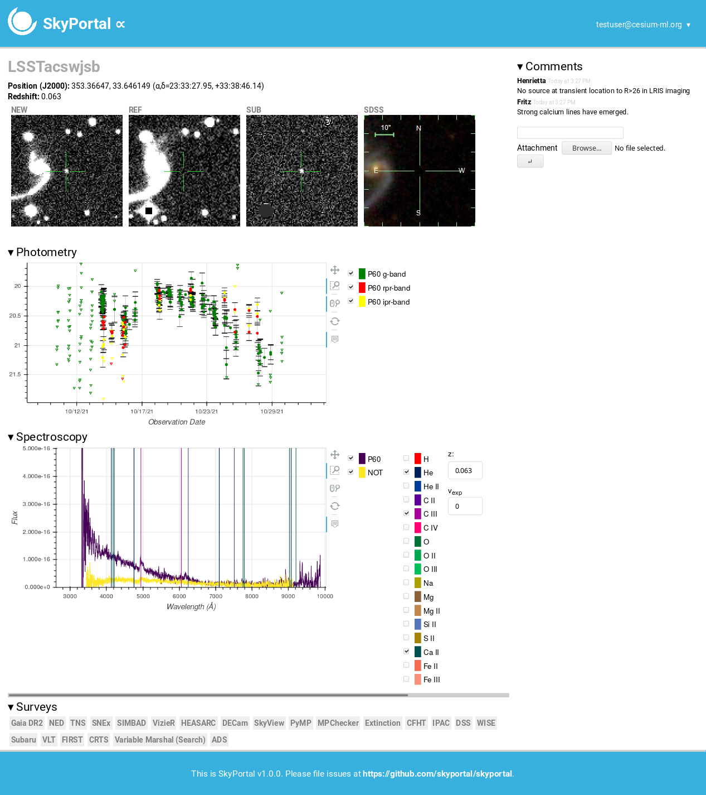

title: ‘SkyPortal: An Astronomical Data Platform’ tags:
Python
web
astronomy
time-series
visualization
analysis
data authors:
name: Stéfan J. van der Walt orcid: 0000-0001-9276-1891 affiliation: 1
name: Arien Crellin-Quick orcid: 0000-0002-7183-0410 affiliation: 2
name: Joshua S. Bloom orcid: 0000-0002-7777-216X affiliation: 2 affiliations:
name: Berkeley Institute for Data Science, University of California, Berkeley index: 1
name: Department of Astronomy, University of California, Berkeley index: 2 date: 7 February 2019 bibliography: paper.bib
Summary#
SkyPortal is a web application that stores and interactively displays astronomical datasets for annotation, analysis, and discovery. It is designed to be modular and extensible, so it can be customized for various scientific use cases. It is released under the Modified BSD license.
SkyPortal was designed with time-series survey data from the Zwicky Transient Facility, and eventually The Large Synoptic Survey Telescope, in mind.
By default, it aims to provide a useful, rich user experience, including light curves of named astronomical events/transients, spectra, live chat, and links to other surveys. But the intent, ultimately, is for the frontend to be modified to best suit the specific scientific problem at hand. The current UI/UX was inspired by that developed for the Palomar Transient Factory (PTF) Marshal [@Law09].
Architecture#
SkyPortal builds on top of baselayer, a customizable scientific web application platform developed by the same authors as part of the Cesium-ML time-series project [@brett_naul-proc-scipy-2016]. Baselayer provides SkyPortal with authentication (via OAuth, Google, etc.), websockets (to communicate between the Python backend and the JavaScript frontend), and the scaffolding for managing microservices and routing incoming requests via Nginx.

The application has a Python backend (running the Tornado web server), with a React & Redux frontend. React was chosen because of its clean component design, and Redux provides the application logic that renders these components appropriately, given the application state.

For machine users, SkyPortal provides a token-based API, meaning that all of its data can be queried and modified by scripts without using the browser frontend.
Importantly, the application is able to provide graphical renditions of datasets, using the Plotly library. In the default version of SkyPortal, this functionality is used to render, e.g., spectra, with the ability to toggle color bands and element spectra, or to adjust redshift.
The platform also has the ability to perform distributed computation via Dask.
SkyPortal implements two types of security: group based, and Access Control List (ACL) based. Group based security determines which users have access to which sources (data objects), each of which is associated with one or more group. The members of these groups can be changed by the administrator. ACL based security deals with user roles, which determine, regardless of data source, which pages a user can access.
SkyPortal is designed to be employed on systems of varying scale: a laptop, local server, or hosted infrastructure. We support packaging the entire application into a Docker container, which can then be deployed to the cloud. An example deployment, using Kubernetes, is provided.
Integration testing is done upon every commit, using Travis-CI, by automating the Firefox browser with GeckoDriver. This ensures that the entire user experience—from logging in to making API requests—keeps working correctly.
Future work#
In the next version of SkyPortal, we intend to support loading sources in real-time from astronomical surveys, typically by ingesting Kafka streams. We also plan to add the ability to publish processed sub-streams, creating so-called “brokers” [@Swinbank14]. Finally, it will be possible to customize views (from the web interface), and for developers to easily add and modify user-interface components.
Conclusion#
SkyPortal is an extensible data platform for astronomy. It is currently being used to analyze data from various sky surveys, with the potential to aid many more astronomers in their data processing and visualization needs. It is actively developed and maintained, and the authors welcome and encourage collaboration.

Acknowledgements#
We thank M. Kasliwal and D. Goldstein for helpful discussions and insights during the prototyping and build-out phases of this project. This work was supported by a Gordon and Betty Moore Foundation Data-Driven Discovery grant.